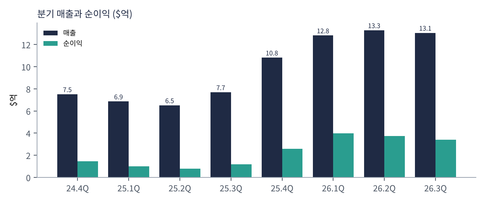
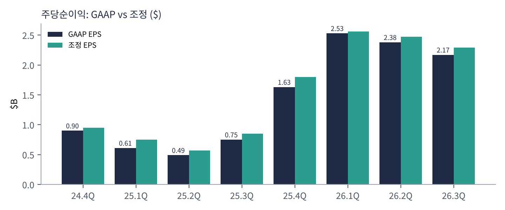
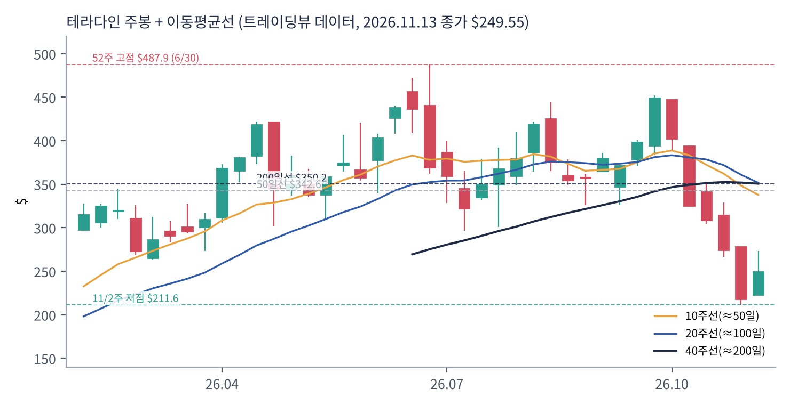
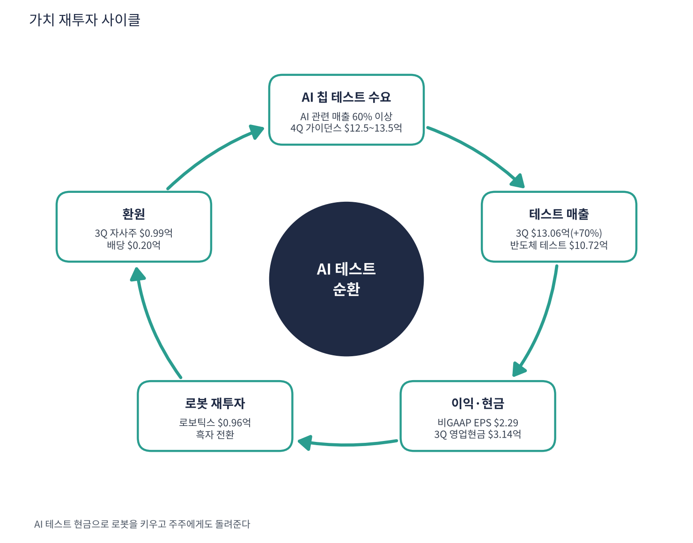

테라다인은 반도체 칩과 전자 제품을 검사하는 자동 테스트 장비(ATE)와 협동 로봇(유니버설 로봇 등)을 파는 회사다. 이 보고서 시점의 매출은 연 약 $50억(TTM)이다. 3분기 매출이 70% 늘고 AI 관련 매출이 60%를 넘었지만, 매출이 두 분기 연속 정체하고 마진이 내려 주가가 6월 고점 대비 절반이 된 회사다.
| 항목 | 내용 |
|---|---|
| 종목 | Teradyne (TER) · NASDAQ · 반도체 테스트 장비·로봇 · 본사 미국 매사추세츠주 노스리딩 |
| 밸류에이션 | PER 28.6배(GAAP TTM), 조정 27.4배 · P/S 8.31배 (11/13 종가 $249.55) |
| 최근 분기(3Q26) | 매출 $13.06억(+70%, 전분기 $13.29억), GAAP 순이익 $3.42억·EPS $2.17, 비GAAP EPS $2.29(+169%) |
| 부문(3Q) | 반도체 테스트 $10.72억, 제품 테스트 $1.38억, 로보틱스 $0.96억(흑자 전환) |
| 가이던스(4Q) | 매출 $12.5~13.5억, 비GAAP EPS $1.95~2.25, 총이익률 57.5~58.5%. 2026 연 중간값 매출 $52억, EPS $9.41 |
| 현금·부채 | 현금 약 $5억, 총차입금 약 $1억(스캐너). 3Q 영업현금 $3.14억, 자사주 $0.99억, 배당 $0.20억 |
| 직책 | 인물 | 역할·특징 |
|---|---|---|
| 경영진 | 실적 발표에서 '테스트와 로봇의 성장 엔진이 여럿'이라고 설명 | 2027년에도 매 분기가 2026년 같은 분기를 넘는 성장을 예상(보도) |
경영 스타일: '가이던스를 넘기며 장기 목표 모델을 제시한다'. 최근 두 분기 연속 매출이 가이던스 상단을 넘었고, 장기 목표 모델로 매출 $120~140억, 총이익률 59~61%, 영업이익률 30~34%, 비GAAP EPS $9.50~11.00을 제시했다(보도). 로보틱스는 구조조정 후 흑자로 돌아섰다.
AI 가속기·메모리·네트워크 칩이 복잡해질수록 테스트 시간과 장비가 늘어난다. AI 관련 매출이 60%를 넘었다고 회사가 밝혔다.
메모리·통합 시스템 테스트가 사상 최고 매출을 냈고 로보틱스는 3분기 매출 최고치를 냈다. 로봇이 반도체 경기와 다른 축이 되길 기대한다(보도).
다음 실적발표는 세 가지 질문에 답하는 자리다.
1. 테스트 매출이 이번 분기에 개선되나?
2. 악재 '매출 정체' 부담이 줄어드나?
3. 악재 '추세' 부담이 줄어드나?
한 줄 판정 규칙: 첫 질문의 테스트 매출이 좋아지면 약한 고리가 풀리고, 그렇지 않으면 현재 사이클의 약점이 그대로 남는다.
일정: 다음 발표일은 확인 필요(이번 분기 발표 후 일정 미확정). 위 현재값은 이 보고서의 기존 숫자다.
| 분기 | 매출 | 순이익 | EPS | 조정 EPS | 특이 사항 |
|---|---|---|---|---|---|
| 2024.4Q | $75.1억 | $14.6억 | 0.90 | 0.95 | |
| 2025.1Q | $68.6억 | $9.9억 | 0.61 | 0.75 | |
| 2025.2Q | $65.1억 | $7.8억 | 0.49 | 0.57 | |
| 2025.3Q | $76.9억 | $12.0억 | 0.75 | 0.85 | |
| 2025.4Q | $108.2억 | $25.7억 | 1.63 | 1.80 | 매출 +44% |
| 2026.1Q | $128.2억 | $39.9억 | 2.53 | 2.56 | 매출 +87% |
| 2026.2Q | $132.9억 | $37.5억 | 2.38 | 2.47 | 매출 +104%, 분기 최고 |
| 2026.3Q | $130.6억 | $34.2억 | 2.17 | 2.29 | 매출 +70%이나 전분기 대비 -2% |


흐름 요약: 분기 매출은 $75.1억에서 $130.6억으로 늘었다. 2025년 4분기부터 $108억, $128억, $133억, $131억으로 올라섰다가 최근 두 분기는 제자리다. 순이익은 $14.6억에서 $34.2억으로 늘었지만 2분기 $37.5억에서 줄었다. 3분기 비GAAP EPS $2.29는 2분기 $2.47보다 낮다. 영업이익과 분기 설비투자는 구하지 못해 표에서 뺐다.
| 부문 | 3Q26 매출 | 비중(내 계산) | 비고 |
|---|---|---|---|
| 반도체 테스트 | $10.72억 | 약 82% | 메모리·통합 시스템 테스트 사상 최고 |
| 제품 테스트 | $1.38억 | 약 11% | |
| 로보틱스 | $0.96억 | 약 7% | 3분기 매출 최고, 흑자 전환 |
반도체 테스트가 매출의 대부분이고 AI 관련 매출이 60%를 넘는다. 지역별 비중은 이 자료에서 구하지 못했다.
테라다인은 'AI 칩 복잡도가 오를수록 테스트 수요가 커진다'는 구조에 올라타 있다.
| 축 | 최근 움직임 |
|---|---|
| AI 테스트 | AI 관련 매출 60% 이상 |
| 메모리·통합 시스템 | 사상 최고 매출 |
| 로보틱스 | 구조조정 후 흑자 전환 |
| 위험 | 매출 정체, 마진 하락, 고객 집중 |

| 이동평균 | 값 | 종가 대비 | 해석 |
|---|---|---|---|
| 5일선 | $254.10 | -1.8% | 현재가가 아래 |
| 20일선 | $281.73 | -11.4% | 현재가가 아래 |
| 50일선 | $342.61 | -27.2% | 현재가가 아래 |
| 100일선 | $358.42 | -30.4% | 현재가가 아래 |
| 200일선 | $350.22 | -28.7% | 현재가가 약 29% 아래 |
주봉 흐름: 2025년 9월 $126~146 → 2026년 1월 $211~241 → 3월 $265~310 → 6월 고점 $487.9 → 9월 $347~449 → 10월 $275~403 → 11월 둘째 주 $211.6(저점) → 11/13 주 $249.6. 모든 이동평균선이 현재가 위에 있다.
| 규칙 | 기준 | 현재 값 | 신호 |
|---|---|---|---|
| 장기 추세 필터 | 종가 vs 200일선 | $249.55 < $350.22 | 매도 |
| 중장기 교차 | 50일선 vs 200일선 | $342.61 < $350.22 | 매도 |
| 단기 교차 | 20일선 vs 50일선 | $281.73 < $342.61 | 매도 |
| 돈키언 채널 | 55일 고가 $451.86 / 저가 $211.63 | 중간값 $331.75 아래 | 매도 |
| 1개월 모멘텀 | 21거래일 수익률 | -27.3% (기준 $343.21) | 매도 |
| 3개월 모멘텀 | 63거래일 수익률 | -43.7% (기준 $443.14) | 매도 |
| 6개월 모멘텀 | 126거래일 수익률 | -26.1% (기준 $337.88) | 매도 |
| 12개월 모멘텀 | 252거래일 수익률 | +39.2% (기준 $179.27) | 매수 |
| 종합 (8개 평균) | -0.75 | 강한 매도 |
해석: 8개 신호 중 7개가 매도, 12개월 모멘텀만 매수(점수 -0.75)다. 14일 ATR $24.21 (9.7%)로 가격 대비 변동폭이 크다.
| 가격 | 무엇이 바뀌나 | 의미 |
|---|---|---|
| $281.7 돌파 | 20일선 | 20/50 신호는 50일선($342.6)도 넘어야 매수로 전환 |
| $331.7 돌파 | 돈키언 중간값 | 채널 신호 매도 → 매수 |
| $337.9 / $343.2 돌파 | 6개월·1개월 기준가 | 모멘텀 신호 매도 → 매수 |
| $350.2 돌파 | 200일선 | 장기 추세 신호 매도 → 매수 |
| 구분 | 가격대 | 근거 |
|---|---|---|
| 저항 1 | $282 ~ 343 | 20일선 $281.7, 50일선 $342.6 |
| 저항 2 | $350 ~ 358 | 200일선 $350.2, 100일선 $358.4 |
| 지지 1 | $211.6 | 11월 둘째 주 저점 |
| 하방 | $211.6 이탈 시 | 직전 기준 가격대 약함(2026년 3월 $270 부근) |
7개 신호가 매도라 신규 진입은 보류한다. 20일선($282)과 200일선($350)을 되찾고 신호가 바뀌면 계획 비중의 30%만 진입한다. 이미 보유 중이면 $211 종가 이탈 시 정리한다. 4분기 실적과 2027년 1분기 가이던스가 확인 지점이다.
| 악재 요인 | 내용 | 강도 |
|---|---|---|
| 매출 정체 | 2분기 $13.29억 → 3분기 $13.06억, 4분기 중간값 $13.0억 | 높음 |
| 마진 하락 | 비GAAP 영업이익률 33.7% → 31.6%, EPS $2.47 → $2.29 | 중간 |
| AI 의존 | AI 관련 매출 60% 이상 | 중간 |
| 기저 효과 | EPS 3배 성장이 앞으로 유지되기 어려움 | 중간 |
| 추세 | CTA -0.75, 7개 신호 매도 | 높음 |
| 티커 | 회사 | PER(TTM) | PEG | P/S | EPS 성장(YoY) |
|---|---|---|---|---|---|
| TER | 테라다인 | 28.6배 | – | 8.31배 | +217% |
| AMAT | 어플라이드 머티어리얼즈 | 29.4배 | 0.65 | 8.83배 | +46% |
| LRCX | 램리서치 | 33.6배 | 0.70 | 11.24배 | +48% |
| KLAC | KLA | 38.1배 | 1.49 | 14.23배 | +26% |
| ASML | ASML | 36.8배 | 0.71 | 12.53배 | +52% |
| MU | 마이크론 | 10.5배 | – | 6.88배 | +879% |
PEG는 트레이딩뷰 PER ÷ GAAP EPS 성장률(내 계산). TER·MU는 기저 효과로 PEG를 산출하지 않았다. 비교 결론: TER의 PER·P/S는 비교군 중 낮은 편이나 성장 지속성이 불확실하다.
테라다인은 현금이 차입금보다 많고 현금 창출이 늘고 있다. 현금 약 $5억, 총차입금 약 $1억이다.
| 지표 | 값 | 계산·출처 | 해석 |
|---|---|---|---|
| 현금 등 | 약 $5억 | 스캐너 | |
| 총차입금 | 약 $1억 | 스캐너 | 순현금 약 $4억 |
| TTM 잉여현금흐름 | 약 $10억 | 스캐너 | – |
| TTM EBITDA | 약 $18억 | 스캐너 | EBITDA 마진 약 36%(TTM 매출 $50억 기준, 내 계산) |
| 기준 | 값 | 비고 |
|---|---|---|
| P/S (TTM) | 8.31배 | 스캐너. TTM 매출 약 $50.0억 기준 내 계산은 7.8배 |
| P/FCF | 약 39배 | TTM 잉여현금 $10억(내 계산) |
| 동종 | LRCX 11.2, AMAT 8.8, KLAC 14.2, ASML 12.5, MU 6.9 | 11/13 스캐너 |
해석: P/S는 장비 동종 중 낮은 편이다. 스트레스 가정(내 가정): 4분기 가이던스 중간 EPS $2.10을 4배한 연환산 $8.40에 PER 20배면 $168(-33%), 25배면 $210(-16%), 30배면 $252(+1%), 35배면 $294(+18%)다. 현재가는 PER 약 30배에 해당한다.
| 지표 | 값 | 판정 |
|---|---|---|
| PER (GAAP TTM) | 28.6배 | 트레이딩뷰, GAAP TTM EPS $8.71 |
| PER (조정 TTM) | 27.4배 | 최근 4분기 조정 EPS 합 $9.12(내 계산) |
| EV / EBITDA | 약 21.4배 | EV(차입금 $1억 − 현금 $5억 반영) ÷ TTM EBITDA $18억(내 계산) |
| 방식 | PER | EPS 성장률 | PEG | 판정 |
|---|---|---|---|---|
| 트레이딩뷰 (GAAP TTM) | 28.6배 | +217% | 0.13 | 기저 효과로 판정 제외 |
| 조정 EPS 기준 | 27.4배 | +192% | 0.14 | 기저 효과로 판정 제외 |
| 2026 연 가이던스 EPS $9.41 기준(내 계산) | 26.5배 | – | – | 전년 $3.95 대비 +138%(보도). 2027 성장률은 가이던스 없음 |
판정: PEG는 0.13~0.14로 계산되지만 AI 수요로 EPS가 한 번에 뛴 기저 효과여서 투자 판정에 쓰지 않는다(산출 불가로 취급). 조정 TTM $9.12는 직전 TTM $3.12의 약 3배다. 이 성장률이 앞으로 이어진다고 볼 근거는 최근 두 분기 매출 정체로 약해졌다.

테라다인의 사이클은 AI 칩 테스트 수요 → 테스트 매출 → 이익·현금 → 로봇 재투자 → 환원이다. 테스트에서 번 현금으로 로봇을 키우고 일부는 환원한다. 약한 고리는 매출 정체와 마진 하락이다.
| 고리 | 현재 숫자 | 고리 강도 | 약해지는 신호 |
|---|---|---|---|
| ① AI 칩 테스트 수요 | AI 관련 매출 60% 이상 | 강함 | AI 고객 투자 둔화 |
| ② 테스트 매출 | 3Q +70%이나 전분기 -2% | 보통 | 4Q 가이던스 중간값 정체 |
| ③ 이익·현금 | 비GAAP 영업이익률 31.6%(-2.1%p), 영업현금 $3.14억 | 보통 | 마진 추가 하락 |
| ④ 로봇 재투자 | 로보틱스 $0.96억, 흑자 전환 | 보통 | 로봇 재적자 |
| ⑤ 환원 | 자사주 $0.99억, 배당 $0.20억 | 강함 | 환원 축소 |
구조: ①⑤가 강하고 ②③이 보통이다. 매출 정체와 마진 하락이 이어지는지가 확인 지점이다.